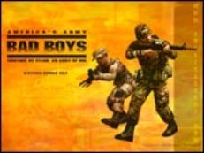

2004-05-02 08:00
The horrific beheading of Nick Berg, now thought to be by Jordanian militant Abu-Musab al-Zarqawi, has once again brought Arab anger at the US into focus. For some Americans it has confirmed their quest for peace; for others it has deepened anger toward the Muslim world. For everyone, it has again brought the gruesome reality of this pointless war into America’s living rooms in a way not seen since the Vietnam War.
While pictures of torture and murder at the Abu Ghraib prison continue to surface, so have rationalizations for the military abuses. Republican Senator James Inhofe expressed “outrage at the outrage” of “humanitarian do-gooders”: Referring to Iraqi prisoners, Inhofe said, “they’re not there for traffic violations,” although as many as half of the prisoners may be innocent victims of security sweeps.
Meanwhile, Conservative pundit Rush Limbaugh, suggested what happened at Abu Ghraib was no worse than “fraternity hazing.” Whether this was uttered in a drug-free moment is unclear.
Lt. Col. Jerry L. Phillabaum, commander of 320th Military Police Battalion, claimed the abuses were “payback” for the purported abuse of Jessica Lynch.
General Antonio Taguba, author of the Taguba Report, pointed the finger at a few bad apples, poor training, and a breakdown of the chain of command, but oddly didn’t see any patterns in the huge number of cases he documented.
Frontpagemag.com played down the torture and murder as mere shenanigans.
Before the occupation, Iraqis were used to torture and murder at Abu Ghraib. Yet instead of shutting down Saddam’s torture factory, the Americans merely added a new innovation: humiliation and total disrespect for Islamic sensibilities. The abuses, which were known even a year ago, have turned moderate and even friendly Iraqis against the American occupation. As Hasan Abu Nimah, former Jordanian ambassador to the UN put it: “If Americans are still asking “why do they hate us?”, they will find the answer now.”
But Americans still don’t get it.
In an essay on the Conservative website, http://www.townhall.com/, Walter E. Williams, a professor at George Mason University, wrote recently, “Of the pictures I saw, the worst acts shown were an Iraqi woman being gang-raped and an American soldier putting a rifle butt to an Iraqi prisoner’s groin.” But then he went on, “These acts aren’t anything that Americans should be proud of, but at the same time, they don’t qualify as torture and atrocities so far as those terms have been historically defined.” This lazy academic apparently doesn’t spend much time in the University library or has never heard of the Geneva Convention. The murders of dozens of prisoners, reported in the mainstream press, are not atrocities to Dr. Williams.
The Reagan worship site, www.federalist.com, dismissed the inquiry as a “feeding frenzy” and also dismissed “two sensational claims: first, that such actions render U.S. forces and Saddam’s agents of terror indistinguishable; and second, that any abuse of Iraqi detainees will lead to the abuse of American captives in retaliation.” This now ridiculously false claim was written before Berg’s murder.
Americans seem to learn lessons only when they are personalized. As writer Greg Stone observed, the grisly murder of Nick Berg was another version of “Shock and Awe.” The US has killed tens of thousands of Iraqis by antiseptic laser-guided missiles, smart bombs, and half a million children by economic sanctions, but to most Americans this suffering is no more real than a video game. Only by personalizing the terror do Americans seem to “get it.” Stalin once said, “A single death is a tragedy; a million deaths is a statistic.” US Central Command’s Tommy Franks answered the question of how many Iraqi civilians have been killed with the response, “We don’t do body counts.” The head of the Iraqi Health Ministry’s statistics department, Dr Nagham Mohsen, was told to stop compiling civilian casualty statistics in Iraqi hospitals. She was also ordered by the US not to release any of the partial information that had been collected to date. Apparently Iraqis aren’t even worthy of being statistics.
For two consecutive years, George Bush had been telling America in his State of the Union addresses, that Islamist terrorism was personified in the form of Iraq. In New Bedford, Massachusetts, an attack on Saurabh Bhalerao, a 24-year-old Hindu from India, almost cost the graduate student his life. While he was being stabbed and beaten, his attackers screamed, “Go back to Iraq!” Their source of information: the President of the United States.
After 9/11 Americans again lashed out indiscriminately. Ann Coulter’s 9/13 article “This is War” concludes with “We should invade their countries, kill their leaders and convert them to Christianity” and expresses what many fundamentalist Christian Americans believe. No matter that we lashed out against the wrong people.
General William Boykin, Deputy Undersecretary of Defense for Intelligence and a Christian fundamentalist, has given speeches for the last two years, telling audiences that Americans have been victorious in battle because “my god was a real god and his was an idol,” “we in the army of God . . . have been raised for such a time as this,” “we’re a Christian nation,” and our “enemy will only be defeated if we come against them in the name of Jesus.” Put in words that al Qaida might cite, it is a religious obligation to “kill the disbelievers wherever we find them.”
A 2000 survey of Christian Evangelicals by Greenberg, Quinlan, Rosner Research concludes: “Evangelicals motivate each other by thinking of themselves, much as the first Christians did, as an embattled minority, marginalized at best or persecuted at worst for their religious beliefs. While other Americans may not necessarily see them in this way, what is most important is that this is how evangelical Christians see themselves. And it is their shared profound dissatisfaction with aspects of the American mainstream that gives them cause to fight to be heard by the American mainstream.”
This view was best expressed by Pat Robertson in a 1993 interview with Molly Ivins, and may explain the Religious Right’s affinity with Israel: “Just like what Nazi Germany did to the Jews, so liberal America is now doing to the evangelical Christians. It’s no different. It is the same thing. It is happening all over again. It is the Democratic Congress, the liberal- based media and the homosexuals who want to destroy the Christians. Wholesale abuse and discrimination and the worst bigotry directed toward any group in America today. More terrible than anything suffered by any minority in history.”
This “embattled minority” not only has the ear of many people of government; they are the government. The Christian Coalition conference in late September this year will feature George Bush, Dick Cheney, John Ashcroft, and Carl Rove, House Majority leader Tom DeLay and Senate Majority leader Bill Frist.
Far from being embattled, Christian Evangelicals are a warring minority with disproportionate influence in the current government. What do they think of non-Christians and other Christians?
Not much.
According to the 2004 report on Christian Evangelicals cited previously, the four most influential religious thinkers were James Dobson, Jerry Falwell, Franklin Graham, and Pat Robertson, in that order – all of whom, like al Qaida’s sheiks, seem to be more interested in politics than in God.
James Dobson, for example, must be using the same notes that Osama bin Laden uses in his calls for Christian jihad to right the wrongs against persecuted Christian minorities around the world. Dobson’s radio show is carried on over 4000 radio stations worldwide and he publishes a number of Christian magazines, including Clubhouse for children. In November 1989, the magazine carried an article on Mother Teresa, the Catholic nun who devoted her life to caring for the poor in Indian slums. Dobson said of the now-sainted nun: “she is by no means a Christian. She is a New Ager and does not believe in being born-again and considers Buddhism, Hinduism, Islam and other religions to be acceptable ways to God…."
So much for mainstream Christians.
Jerry Falwell called the founder and revered prophet of Islam, Muhammad, a “terrorist” on CBS’s “60 Minutes”.
Franklin Graham labeled Islam a “very evil and wicked religion” and said the Qur’an, Islam’s revealed text, “preaches violence.” The Bush family has a close relationship with both Franklin Graham and Graham’s famous father Billy.
Pat Robertson claimed Islam is a “monumental scam” and branded the prophet Muhammad “an absolute wild-eyed fanatic…a robber and brigand…a killer.”
Jews don’t fare much better, but attacking them is a bit tricky because Evangelicals believe that all the Jews in the world must return to Israel before the Second Coming, and this tends to encourage a Christian form of Zionism.
In bed with the Christian Right is the Jewish Right. For example, Rabbi Yechiel Eckstein of the International Fellowship of Christians and Jews will attend this year’s Christian Coalition conference. Although ostensibly to promote understanding between Christians and Jews, the organization has a simple purpose: to provide Christian support for the government of Israel. The organization sponsors the “Stand for Israel” and “Bless Israel” programs. “Stand for Israel” was the brainchild of both Eckstein, who resides in Israel, and Ralph Reed, former executive director of the Christian Coalition.
The relationship has created a general feeling of disgust in the American Jewish community. A July 2002 article by Ami Eden in the Jewish paper Forward describes Eckstein as a “pariah” and quotes Abraham Foxman of the Anti-Defamation League as saying, “I don’t care how many millions [Eckstein’s group] brings in [for Israel], I find it distasteful.”
A former South African, Rabbi Daniel Lapin, is a founder of a conservative Jewish group, Toward Tradition. Recently he founded the American Alliance of Jews and Christians, which has on its board Dr. James Dobson, Charles Colson, Rev. Jerry Falwell, Rev. Pat Robertson, Pastor Rick Scarborough, as well as Rabbi Barry Freundel, Rabbi David Novak, Rabbi Meir Soloveichik, Michael Medved, John Uhlmann, and Jack Abramoff.
In November 30, 2001, Rabbi Lapin issued a fatwa declaring that, in his opinion, US troops were not bound by restraints on brutality (“Toward Tradition says, Don’t Impose ‘Just War’ Rules on our Armed Forces”). Rabbi Lapin commented: “In war, the objective must be only to win, and the Torah understands this. Now consider three examples of ‘just war’ theory. First, believers in this theory say an army must avoid harming civilians. But the Torah has no concept of ‘civilians.’ In ancient Israel, the population were all equally combatants. Also, while loving peace, God sometimes commanded Israel to wipe out an enemy, including women and children!” In so doing, Lapin threw Talmudic injunctions on excessive violence and treatment of civilians into the garbage and proved himself a close cousin of the sheiks who follow bin Laden.
And it seems the US military has heeded these voices of intolerance.
Not content with already being a dangerous lunatic, in June 2002, Lapin issued a press release defending Reverend Jerry Vines, former president of the Southern Baptist Convention, who asserted that “Islam is not just as good as Christianity” and had called the Prophet Muhammad a “demon-possessed pedophile.” In contrast to the Anti-Defamation League and other liberal Jewish groups who joined CAIR (the Council on American-Islamic Relations) in denouncing Vines, Lapin said, “As CNN’s Lou Dobbs has correctly pointed out, we are at war now not simply against ‘terrorism’ but against radical Islam. Charles Colson of Prison Fellowship Ministries reminds us that Muslims are recruiting in U.S. jails, seeking to raise a following of criminals. For Jews who support Israel to side with Islam in this dispute and condemn the Baptists is deeply misguided."
Christian organizations such as Bridges for Peace, Christians for Israel, International Christian Embassy Jerusalem and Chosen People Ministries, provide tens of millions of dollars of support for Israel, often going to programs in the occupied territories.
The Likud party in Israel has long accepted aid from Evangelical Christian groups. In 1979 Menachim Begin gave Jerry Falwell a Lear jet to thank him for services rendered in the 1977 election. This year Likud member and Israeli President Ariel Sharon greeted various Evangelical groups to thank them for their support, and in January the Israeli parliament created a Christian Allies Caucus to coordinate activities with Christian groups. Also earlier this year, Natan Sharansky, Israeli minister to the Diaspora and for Jerusalem affairs, met with Evangelicals in Memphis to thank them for their “steadfast support for the state of Israel.” Bill Broadway’s March 27, 2004 article in the Washington Post discusses numerous other connections between the Likud and Christian organizations.
In his article titled “Israel’s Christian Soldiers,” Craig Horowitz noted: “Citing Scripture, Evangelical Christians have taken up the cause of preserving Israel with a passion—no matter how many liberal Jews find their unlikely devotion unsettling” and “the Evangelicals may now be seen as even more important allies than American Jews.” He cites Tom DeLay speaking before the Knesset: “I stand before you today, in solidarity, as an Israeli of the heart.” It is tempting to chalk it all up to cynical politics, but these politicians’ personal religious views truly influence national politics.
Though their uncritical support of Israel raises eyebrows, it is gratefully accepted and courted by pro-Israel groups. From the Horowitz article again: “Let’s be honest,” says Rabbi A. James Rudin, who was director of inter-religious affairs during his more than 30 years with the American Jewish Committee. “It’s hard to ignore their support even, as my father used to say, if they’re doing the right thing for the wrong reasons.”
So, while liberal and moderate Jews in the United States are inclined to support organizations like Americans for Peace Now, the Religious Right is hoping and working for a Messianic era, in which not only Muslims but Jews will be erased from Jerusalem and a second Messiah will appear to the faithful, completing the Evangelical view of the End of Time.
These are the people currently running our country.
In the statement read by Nick Berg’s murderer, Abu Ghraib and other facilities were called the “prisons of the Crusaders.” While Islam proselytizes, many Muslims are sensitive to the possible link between the occupation and Christian missionary activities that may follow. In fact, this is not an unfounded concern.
Franklin Graham, whose remarks concerning Islam have drawn the condemnation of Islamic and Jewish anti-defamation organizations and who delivered the invocation at George Bush’s inauguration, runs an organization called Samaritan’s Purse, whose workers are waiting in Jordan until it is safe to operate in Iraq. While it is officially a charity, it describes its mandate: " to promote the gospel of the Lord Jesus Christ." Abu Musab al-Zarqawi, also from Jordan, the killer of Nick Berg, must also have been aware of Samaritan’s Purse.
Likewise, the Southern Baptists see the occupation as a great opportunity for converting the barbaric Mohammedans. Missionary coordinator Sam Porter of Oklahoma puts it this way: “If someone says ‘Why would you to come to Iraq to serve in an impoverished, war-stricken country?’ we would say it was because of the love that the Lord Jesus Christ put in our hearts. If a country opens up for evangelical missions to go there, we go. We believe strongly that Jesus Christ is the son of God and we intend to proclaim that.”
Missionary organizations like Frontiers (frontiers.org) specifically target Muslims, much like Zion’s Hope, “Jews [sic] for Jesus”, and the Southern Baptists target Jews.
William F. Buckley, in a May 2003 piece in the National Review Online, wrote that “the program initiated by sundry evangelical Christian ministers to accost Islam by teaching the tenets of the Christian faith to those who seek to bring that faith to Muslims is very good stuff, overdue.” Insinuating that Islam was like the Soviet “Evil Empire” whose demise Ronald Reagan helped, Buckley wrote that “our diplomats and our generals have prescribed roles to play, but ahead of diplomacy and military action are our philosophers, even as the preachments of Locke et al. preceded the thought that galvanized our Declaration of Independence and the Bill of Rights.” Buckley apparently believes that Jesus-as-Philosopher (precisely the Bush formulation) is a necessary prerequisite to Iraqi democracy.
On May 2, 2003, frontpagemag.com ran an article by Michael Anbar titled “Where Are the Moderate Muslims?” Anbar, who also writes for think-israel.org, boils down Islam to a simplistic formulation: “Islam is a politically driven religion bound on military triumph, conquest and subjugation.” Interestingly, many Muslims see Zionism precisely the same way. But Anbar portrays Israel and the West as fighting for their survival in the face of scimitar-wielding hordes. Anbar fully subscribes to the notion that Islam, “which politically dominates a third of humanity and has aspirations to conquer the rest”, must be conquered and reformed. He writes:“Harvard’s Professor Samuel Huntington’s “clash of civilizations” is, therefore, not illusionary.” Discussions like this, in which Christians and Jews debate reforming Islam by presumably military and political means, do indeed tend to frighten Muslims, most of whom do not share these apocalyptic views.
Well, if you can’t fight ‘em, reform ‘em, or convert ‘em, then nuke ‘em.
On March 7, 2002, Rich Lowry, an editor of the National Review actually suggested dropping nuclear bombs on Mecca, Baghdad, Tehran, Gaza City, Ramallah, Damascus, Cairo, Algiers, Tripoli, and Riyadh. Apparently, the idea of a “Final Solution” is still kicking around.
Add to this a constant diet of horrible, dehumanizing images of Arabs in the media, and you have a mix that guarantees war on the Arab “brutes.”
In the Disney movie, Aladdin, impressionable children are given instruction in Arab culture:
“Oh, I come from a land .
From a faraway place
Where the caravan camels roam,
Where they cut off your ear
If they don’t like your face
It’s barbaric, but hey, its home.”
If you’re looking for a villain, look no further than the Arab. According to a 1995 article by Marvin Wingfield and Bushra Karaman entitled “Arab Stereotypes and American Educators,” Arabs are represented as uncultured billionaires pawing blonde women, or as terrorists, belly dancers, harem girls, or fanatical tribesmen. Media analyst Jack Shaheen, the author of “Reel Bad Arabs: How Hollywood Vilifies a People,” has documented over 900 films in which Arabs are depicted negatively.
In “The Nature and Structure of the Islamic World,” Ralph Braibanti writes: “The 1994 movies True Lies, with Arnold Schwarzenegger in the lead role, is blatantly racist, anti-Muslim and anti-Arab. Movies slanted against Arabs or Islam are not a new phenomenon. Time magazine listed films starting with The Sheikh (1921), Protocol (1984) and Jewel of the Nile (1985)–all of which emphasized Arabs as exotic, sex-crazed lovers. Lawrence of Arabia (1962) depicts the Arab as ‘a political naif in need of tutelage from a wise Westerner.’ The Formula (1980), Rollover (1981) and Power (1981) emphasize the Arab as an unscrupulous, oil-wealthy plutocrat. Black Sunday (1977) and Delta Force (1986) portray the Arabs as terrorists.”
In an article by Laurie Goodstein entitled “Hollywood Now Plays Cowboys and Arabs,” she describes how Arabs have become the new villains in shoot-em-up movies. Most Arab actors can’t seem to find any work other than being ultimately slain by the “good guys.” She cites the case of actor Sayed Badreya: “With his dark beard and his accented English, he has had his pick of parts as terrorists, hijackers, kidnappers and Islamic militants.” According to Badreya: “When I got to Hollywood, at first I couldn’t get a lot of jobs, so I grew a beard and look like a really bad Arab, and I started to get a lot of work because that’s what they want." This puts Arabs in Hollywood where Black Americans were about 1950.
But Arabs make even better target practice.

Video games like Desert Storm, Iraqi Freedom, and Intifada, provide many hours of fun for the whole family, blowing up and shooting Arabs to pieces. In fact there are hundreds of these games. In a visit to www.newgrounds.com, we found several pages of listings of free games, including “IRAQ ATTACK - Lay waste to Saddam’s regime… Or US oil fields if you like! Wacka wacka!” and “AL QUAIDAMON - Your very own war prisoner! How will you treat him?” No rules, no political correctness, and you can download the “cheats.”
In an essay by Judith Moriarty, “Song of the Rain: Lament for Iraq,” she writes: " today’s youth are well trained and conditioned to the thrill of killing Missiles fired from ships far out to sea by computer and bombs dropped by computer have soldiers well trained. Blood, guts, gore, Terminators, and violent films/TV movies of every description, are typical viewing. Lest we forget, World War II veterans were not exposed to this. A reverence for life was still a valued character trait. Americans watching war from a distance see none of the shredded bodies of children, families terrorized, homes broken into by soldiers, nor do they smell the charred flesh of melted bodies by some new cook’em micro-wave weaponry. Watching “Shock and Awe” with a bag of pork rinds, a six-pack, and a super sized grinder stuffed with salami, ham, cheese, tomatoes, lettuce, pickles etc., sure makes war a lot more enjoyable."
The US Army does its part to promote this same culture of militarism among children by publishing a free game called America’s Army with software developer UBISoft. According to descriptions on the website, the game depicts two American/European-like armies similarly. However, the “game” does include many interviews with military commanders, descriptions of Gulf War operations, and familiarizes children with military hardware and armaments. The Army describes the program as a recruiting tool, but because of the supplementary interviews it doubles as dandy propaganda.
How will things ever change?
If we don’t want to be attacked by religious fanatics, we need to get rid of our own. We live in a secular state, no matter what some may believe or prefer. A code of ethics must bind public servants to serve the entire public, not just that portion of it which shares their religious values. Outrageous and inflammatory statements by politicians and soldiers alike should be grounds for immediate dismissal or impeachment. Lying to Congress is already a crime. The President should be tried for this crime. We must demand accountability in government, however high the investigation goes. We should not rush to prosecute low-level soldiers until a full investigation of these atrocities has been completed.
The world was told a terrible lie about Iraq. The needless murder of tens of thousands of civilians and the destruction of a nation on false premises demands punishment of the President. The reckless management and planning of this war demands punishment of the Secretary of Defense. The victims of this war demand justice and their families deserve compensation. Apologies without feeling and remorse without repairing the damage are characteristics of sociopathic behavior. Do we want a government of sociopaths? If not, we need to replace them.
But none of this will remove the root causes of our habitual invasions of other countries. Americans don’t understand other cultures because our view of multiculturalism is that of the melting pot – and we’re the pot everyone is expected to melt into. We don’t care about history. If we did, we might learn something from it – that long-distance invasions of other countries always fail. The Romans learned this lesson two thousand years ago in Palestine. The British should have learned this lesson during their Age of Empire, and one would have thought we learned this lesson during the Vietnam War. The Russians couldn’t hold on to Afghanistan, and they won’t be able to hold onto Chechnya. American Colonists taught the British the same lesson during our own Revolutionary War. But ignorance and religious fundamentalism step into the breach and insanity and catastrophe replace learning lessons.
We are a violent and aggressive society. We scare other people and nations. In fact, we take pride in it and our weapons. Then we turn around and are amazed when they fear or dislike us. We can reverse this by electing candidates based on party platforms, rather than beauty contests, and taking back the ability to declare or wage war from the President – as our Constitution has always mandated. We can stop spending so much of our GNP on military equipment and use it for social needs – or bank it. As it is, our children will be paying off the Bush deficits for decades.
Only regime change in Washington will permit positive changes. Even if John Kerry is elected, it is doubtful he would distinguish himself from the Bush administration in foreign policy. Still, someone will eventually have to address the following:
We have a lot of fences to mend. The US must normalize its relationship with the UN, with Europe, with Israel, and with the Arab World.
In the UN, we must re-dedicate ourselves to a more international view. We are only 4% of the earth’s population, and a shrinking percentage at that.
We must approach the New Europe with the realization that this is an entity with a population that exceeds that of our own, with a rising economy and currency, and a more independent view of foreign policy. We can no longer force foreign policy down their throat, we must expect friendly give and take from them, and we won’t always agree.
With Israel, normalization does not mean abandonment, but it does mean dropping a very expensive foreign aid habit. Israel must accept a Palestinian homeland and return land taken by settlements. The Arab world must recognize Israel’s right to exist, and both Israeli and Iranian nukes should be under international supervision. Jerusalem should be a shared city, as it has always been. Instead of spending $3-9 billion a year on Israeli defense, we could instead participate in or sponsor joint Israeli/Palestinian construction, infrastructure, and water projects.
Stopping military subsidies to Israel is the only way to get their attention since they currently hold all the cards. We can never forget Israel, especially since there are so many Americans with connections to the country. But we can also not permit injustice, poverty, and despair in Palestine. And the United States has an equally large Muslim population, and this is an important issue for them as well. Thus, we can never forget them either.
This will no doubt upset fundamentalists in Israel and the US who believe that the Six Day War was a sign from God, and who still harbor notions that a bigger chunk of real estate is still due them. However, for the majority of Israelis and Americans who just want peace, it will mean the beginning of a normal existence that the country has yet to experience.
Though a resolution of the Israeli/Palestinian issue would solve a number of issues with the Arab world, reducing our dependence on oil would also improve this relationship.
First, any strong dependence on another party is unhealthy. Just as we must rebuild a strong domestic manufacturing core, we must also be a bit more energy self-sufficient. As Chinese, Indian, American and EU markets grow, all will be competing for a shrinking amount of oil, so reducing dependence is inevitable. By having relationships with Arab nations other than through oil, we can establish real ties, not ones of convenience or desperation.
We live in a secular society, and that has worked for us for hundreds of years. In a country of 300 million people with citizens from every land and every religion, we cannot afford to have a state religion. Despite the crowing by Christian Evangelicals that the US is a “Christian Nation,” separation of Church and State has been hardcoded into our Constitution. It may be true that many Judeo-Christian concepts have found their way into our laws, but erecting monuments with the Southern Baptist translation of the Ten Commandments in courthouses does not honor the other legal traditions, some of them Babylonian, that also shaped our concepts of justice. In the end we publicly follow the laws of the land and privately follow the dictates of our conscience and our personal religions. That is the American way.
It is clear we have a troubled relationship with religion in the US. Christian Evangelicals feel embattled, Jews and Muslims still feel the sting of prejudice, mainstream Christian denominations are bristling with debate over social issues like gay marriage, sexual abuse scandals, intermarriage, and whether to become politically active. Religious traditionalists – and by this I mean Christians, Jews, Muslims, and others who quietly live a faith that has a strong daily structure, such as observing dietary and other prohibitions – have a hard time in a society dripping with commercialized sex, greed, and vulgarity. It is not surprising that alliances have formed between Orthodox Jews and Southern Baptists around “family values” and similar shared concerns. Religious traditionalists also share values surrounding education (Orthodox Jews, Muslims, and Christian Evangelicals all deny Darwin’s theory of evolution and many home-school their children). While preserving our secular democracy and avoiding dragging religion into government with “Faith-based initiatives,” we nonetheless have to make society as friendly as possible for all religions, not just Evangelical Christianity. We cannot afford to maintain the intense polarizations that currently exist.
Despite all our faults, the greatness of this nation is that we have always been able to meet the challenges of social change. It is time for us to begin a national dialog – not the current monologue or harangue – on what we want this country to be. We need to re-invent a notion of a social contract that re-dedicates this society to serving the people that live in it rather than the corporations that pillage it. Citizens need to understand how they can be useful and valued by society. We ought to choose national priorities more carefully than spinning a wheel and declaring one afternoon that we’re going to send astronauts to Mars. We currently live in a society that throws away its sick and elderly, marginalizes its minorities, and offers little hope or support for families or the newest generation. It is no wonder that, in this climate of fear and uncertainty, “family values” transmogrifies from social to exclusively religious issues. We could resolve to never let the country drift so far off-course in the future as it has today.